Designing the settlement backbone for a national power trading desk
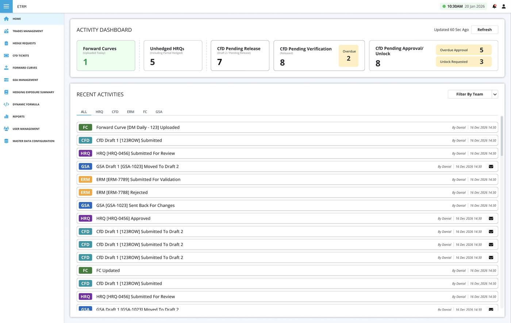
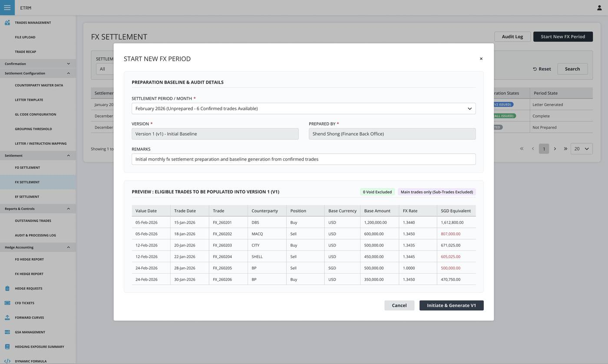
Context
YTL PowerSeraya's ETRM (Energy Trade Risk Management) system replaced a legacy Derivatives Trade Capture tool that went live in November 2024. It serves Enterprise Sales, Derivatives Trading, Finance/Treasury, and Enterprise Risk Management teams who previously coordinated trade confirmation, settlement, and hedge accounting across disconnected spreadsheets and manual email chains.
I was the sole product designer across both phases — Phase A brought trade capture into one system; Phase B, covered here, extended it into full settlement, hedge accounting, letter generation, and GSA/CfD lifecycle management.
Problem
Phase B's mandate was to bring Finance fully into the ETRM ecosystem — automating settlement reconciliation and hedge accounting that had been manual, spreadsheet-driven processes — without losing the accuracy the business depended on. Every screen had to work for finance and ops staff who weren't traders, while still handling real financial settlements running into the millions.
Energy trading isn't intuitive, and this system settles real money. A misread grid isn't a UX metric — it's a wrong wire transfer.
Constraints
Domain complexity ran deep — FO, FX, and EF settlement, hedge accounting, and CfD conversions each carry distinct financial logic. Data flowed in from three external systems (SCRM, EDH, CCnB), so there was no clean single source of truth to design around. And four departments with very different mental models — Sales, Trading, Finance, and Risk — needed the same interface to make sense to all of them.
Principles that guided decisions
Use sensible defaults so users can act quickly without second-guessing.
Surface advanced options only when needed. Keep the primary path simple.
At every touchpoint, users should know exactly what comes next.
Trader and settlement officer workflows must be considered together, not in isolation.
What I decided, and why
1. Period Versioning & Audit-Locked Settlement History
Settlement isn't a one-and-done event — trade adjustments, volume true-ups, and price corrections happen continuously. I architected a multi-version period lifecycle model (V2 Active Working vs V1 Superseded Read Only) tracking preparation states, total trades, delta changes, and locked financial snapshots required for strict SOX and audit compliance.
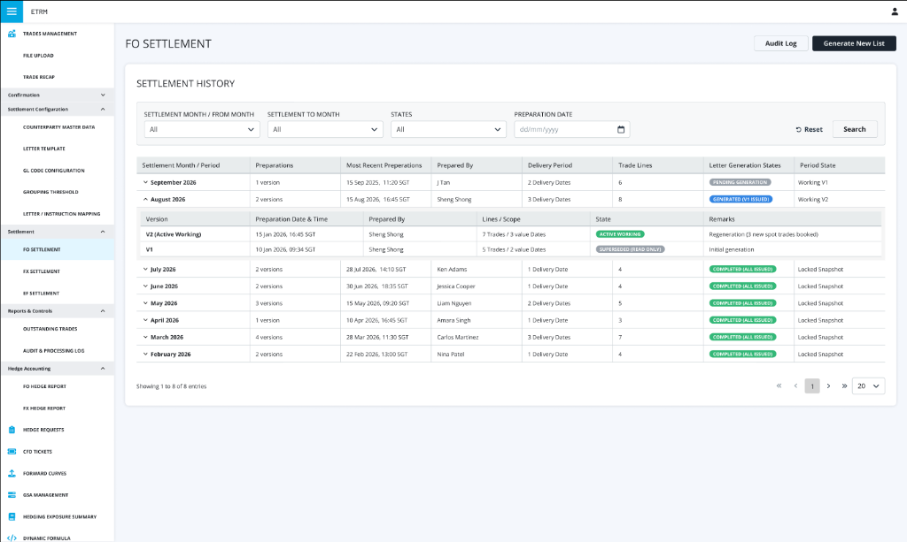
2. Multi-Pivot Reconciliation Grid with Live Telemetry
Finance officers needed to reconcile complex multi-commodity positions across counterparties and cash settlement dates without getting lost in flat spreadsheet rows. I introduced top-level KPI telemetry cards (Counterparties, Settlement Dates, Confirmed vs Unconfirmed ratio, Net Settlement SGD sum) paired with a 3-way operational pivot (By Counterparty, By Settlement Date, By Product). Trade line status indicators (CHANGED, DISPUTED, NEW, CONFIRMED) and isolated rollups for Bilateral vs Exchange-cleared amounts give immediate visibility before drilling down into line items.
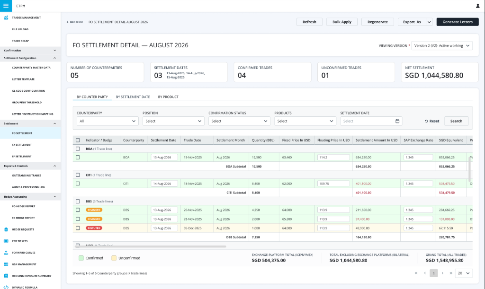
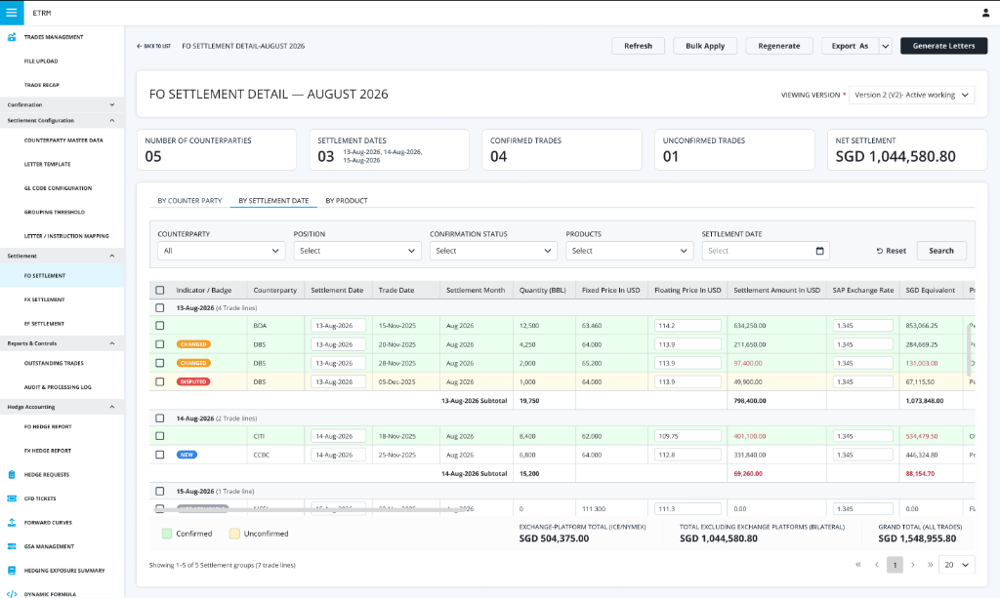
3. Pre-Settlement Counterparty Agreement & Email Automation
Before binding settlement letters are finalized, finance officers dispatch provisional statements to counterparties to secure mutual agreement. I designed an agreement tracker and side-by-side automated email preview module. It pairs counterparty response states (AGREED, NOT APPLICABLE) with instant WYSIWYG email drafting and dynamic Excel snapshot attachments (FO_Settlement_Aug2026_BOA_v2.xlsx), drastically shortening the monthly reconciliation cycle.
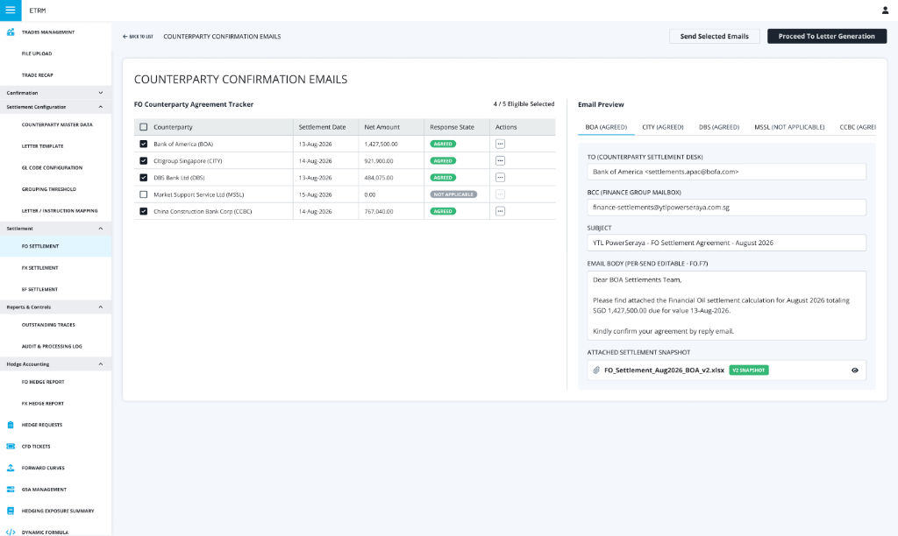
4. Self-Serve Letter Template Designer with Live Preview
Settlement letters are legally significant documents sent directly to counterparties — previously, any change meant an engineering ticket. I designed a component-based template builder where Finance assembles letters from reusable blocks (salutation, routing, debit authorization, signatories) and sees the exact letter render update in real time, with full version history for audit purposes.
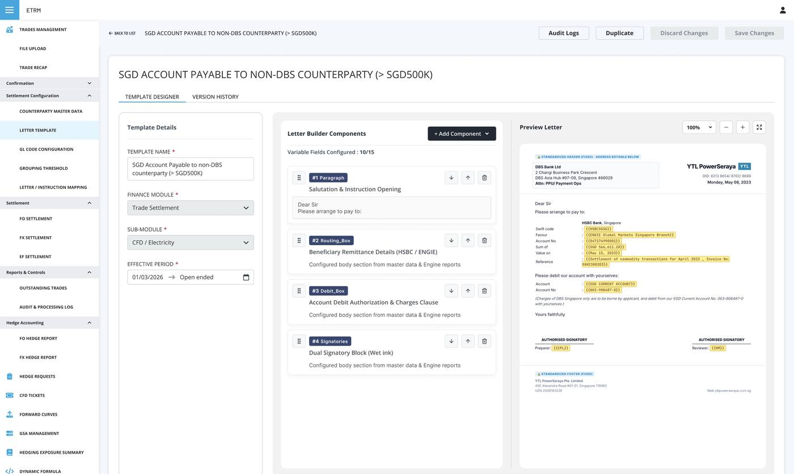
5. Status-Driven Visual Language for Audit-Heavy Workflows
Across settlement periods, letter templates, and hedge requests, users needed to know at a glance what state something was in without reading every row. I standardized a small set of status badges (Active, Suspended, Draft, Retired, Submitted, Approved, Novated, Changed, Disputed) used consistently across every module, so status recognition became a pattern rather than something to re-learn per screen.
More of the system
Deep dive into specialized sub-modules engineered for automated settlement reconciliation, SOX-compliant legal document authoring, and high-scale hedge risk trading.
Start New FX Settlement Period
Pre-commit verification wizard preventing double-settlement by querying outstanding open positions against SCRM counterparty balances before locking the accounting period.
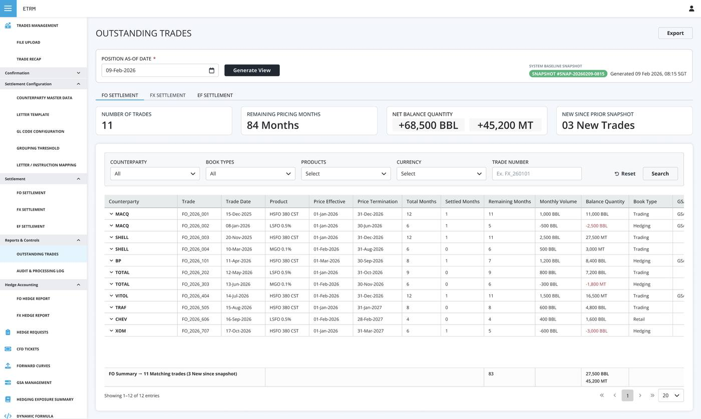
Outstanding Trades & Pricing Months
High-density position grid tracking unliquidated energy contracts across forward pricing months with real-time remaining balance and volume recalculation.
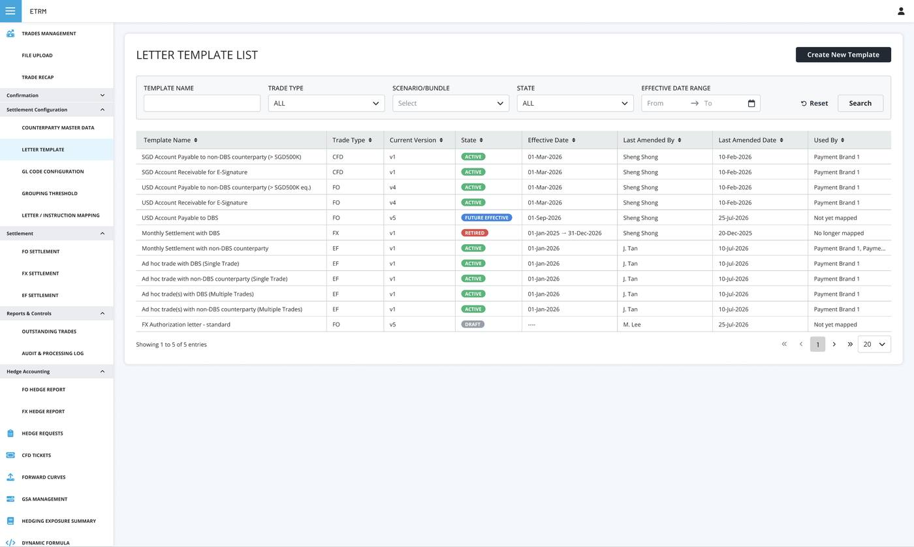
Letter Template Master Registry
Centralized registry displaying active, suspended, and draft state bindings across ISDA/GSA counterparties with effective date controls and mapping clarity.
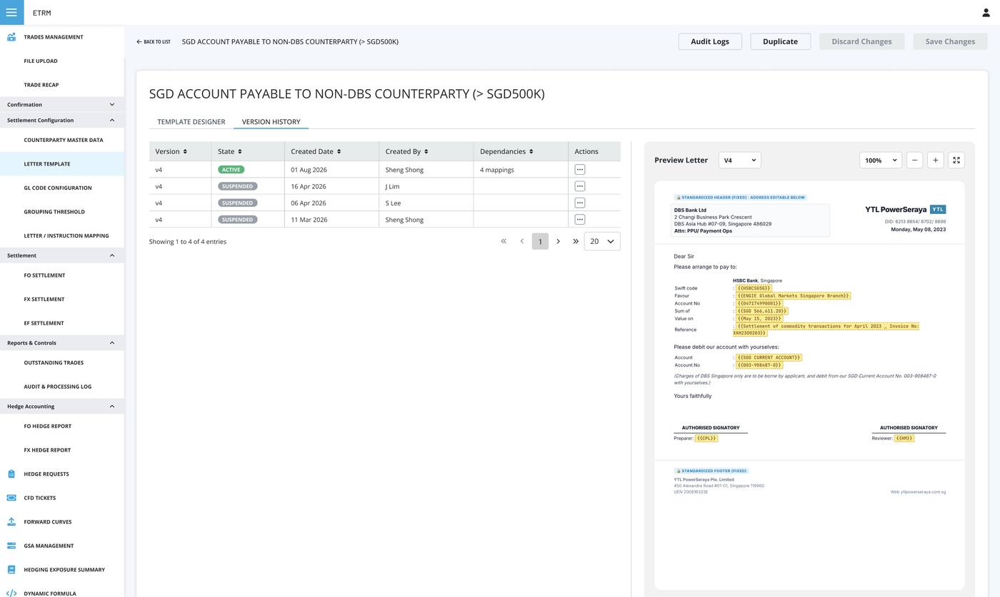
Immutable Template Version History
Granular revision tracker logging author identity, timestamped parameter diffs, and signatory revisions required for strict financial audit trails.
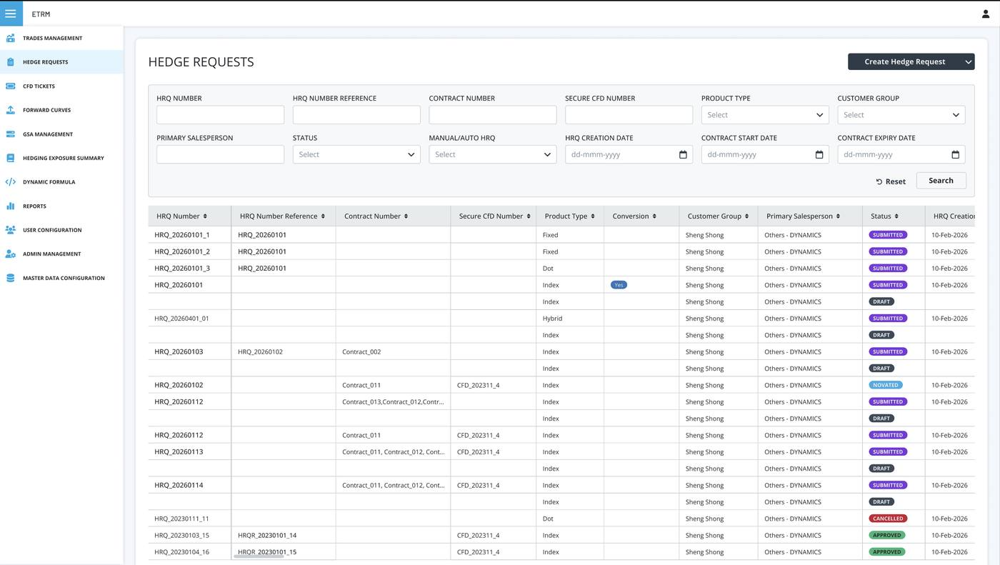
Hedge Request Lifecycle Filtration
Multi-parameter risk triage allowing trading desk operators to filter hedge requests across fuel commodities, tenors, salesperson queues, and approval gates.
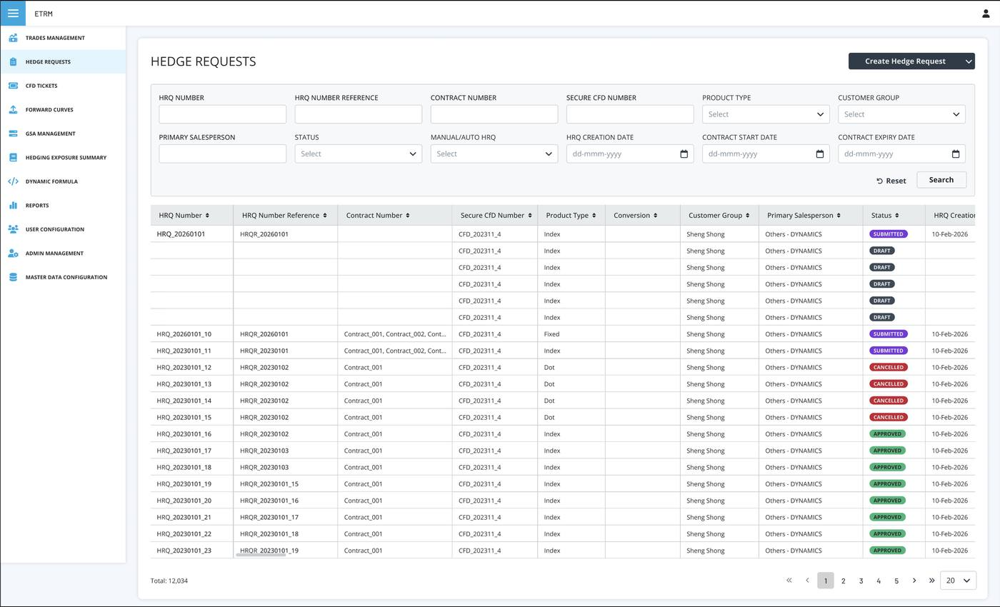
High-Scale Density & Performance
Virtual-scrolling financial grid rendering over 12,000 active trade records with sub-100ms multi-column sorting and instant keyboard-navigable pagination.
Outcome
Figures are approximate, based on process change rather than formally tracked A/B data.